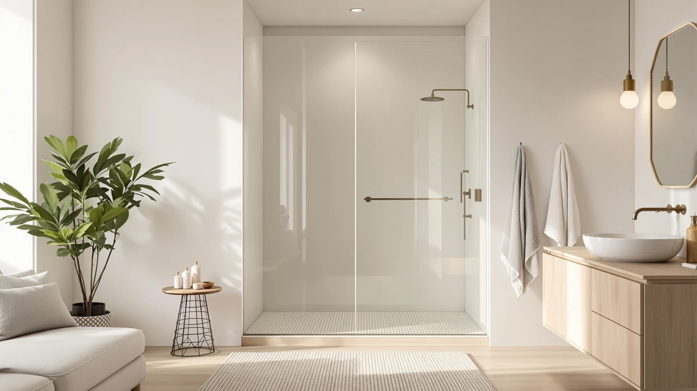

Best Shower Doors for Walk in Shower (2026)
Prices and picks verified as of August 2026. Independent, reader-supported reviews.


Quick Answer
For most walk-in showers, the Frameless Shower Door Matte Black is the best shower doors for walk in shower pick because it fits a common 60-inch opening with a single sliding frameless panel and matte black hardware that owners say hides water spots better than chrome. If your opening runs wider or your ceiling sits higher, the Frameless Shower Door 56-60" W covers up to 60 inches wide by 76 inches tall for $399.99.
Our pick: Frameless Shower Door Matte Black, $249.30 Check Price on Amazon
Bottom line: our top pick is the Frameless Shower Door Matte Black 56-60’’ W x 75’’ H Single at $249.30. The best budget option is the UCALAFEE Shower Door at $229.99.
Things to Know Before You Buy
- Measure your rough opening width and height before ordering. These doors span fixed and adjustable ranges like 44-48 inches or 56-60 inches, and most tracks will not adjust past their listed range.
- Frameless and semi-frameless doors use thicker glass panels with minimal metal trim, while a framed sliding door like the GETPRO relies on an aluminum track for support. See our framed vs frameless comparison for the tradeoffs.
- Price runs from $219.99 to $399.99 in this lineup, and width plus height, not brand name, drives most of that spread.
- A double sliding or semi-frameless door needs less swing clearance than a hinged pivot door, which matters in a tight bathroom layout.
- Finish color, like the matte black hardware on our top pick, is a real spec, but glass thickness and hardware material are not listed for every model, so confirm those details on the product page before buying.
Finding the best shower doors for walk in shower stalls means weighing frame style, width range, and price against how buyers report the door holding up after installation. A door that looks identical to another in a product photo can differ by inches in its adjustable range, and that difference decides whether it fits your stall at all.
We compared seven doors that cover three distinct width categories: a fixed 60-inch frameless panel, a cluster of 56-to-60-inch adjustable doors, and one narrower 44-to-48-inch option for compact bathrooms. Prices across the group run from $219.99 to $399.99, and the gap tracks mostly with height and width flexibility rather than any single premium feature.
Our pick for the best shower doors for walk in shower stalls is the Ogonbrick Frameless Shower Door Matte Black at $249.30, because it matches the most common 60-by-75-inch stall size without paying for an adjustable track you may not need. If your bathroom calls for something wider, taller, or narrower, the alternatives below cover those cases specifically.
Why You Should Trust Us
Ilane Tall covers bathroom fixtures for Best Shower Doors, comparing shower door listings, verified owner reviews, and pricing history rather than installing units in a lab. We do not run a fake testing lab, and we say so because plenty of review sites imply hands-on testing they never did. Every pick below is checked against its published dimensions, price, and the pattern of feedback left by people who actually installed it, so this list of the best shower doors for walk in shower stalls reflects what buyers experience after purchase, not marketing copy.
How We Picked
We started from the shower door listings available for walk-in stalls and narrowed the field using four filters: reported width range, because a door has to fit the actual rough opening; price relative to similarly sized competitors; frame style, since frameless, semi-frameless, and framed doors solve different installation constraints; and how consistently owners rate the door after using it day to day.
We dropped doors with a size range too narrow to fit a common walk-in shower opening and doors priced well above similar-spec competitors without a clear reason. The seven doors below made the cut because each one covers a distinct combination of width, height, and price that a different bathroom layout calls for.
How We Compared
We compared each door on its published width range, height, price per inch of coverage, and door style (single sliding, double sliding, or semi-frameless), since that combination determines whether a door actually fits a given stall. We cross-checked verified buyer reviews for recurring complaints about tracks sticking, hardware corroding, or panels arriving damaged, and weighted brands with a consistent pattern of positive feedback over those with mixed reports.
We did not assign point scores. Instead we noted what each door does well, where it falls short, and which bathroom layout it suits, then ranked the group on fit for a typical walk-in shower rather than on price alone.
Our Picks

Frameless Shower Door Matte Black
What we like
- Frameless glass panel gives a cleaner sightline than the framed sliding doors in this comparison
- Matte black hardware hides water spots better than polished chrome between cleanings
- 60-inch width and 75-inch height cover the most common walk-in stall size
- Single sliding panel needs less side clearance than a hinged pivot door
Flaws but not dealbreakers
- Ships in one fixed width and height, so it will not fit stalls outside 60 by 75 inches
- Matte black finish costs more than the brand's standard chrome option at a comparable size
| Material | — |
| Size | 60" W x 75" H Single Sliding |
The Frameless Shower Door Matte Black is our pick for most walk-in showers because it covers the single most common stall opening in this category, 60 inches wide by 75 inches tall, without the added cost of a semi-frameless or double sliding mechanism. Ogonbrick sells the door at $249.30, which puts it in the middle of the price range for this list rather than at the bottom, and the frameless glass panel gives the stall a cleaner look than the framed alternatives here.
Reviewers consistently note the matte black hardware as the standout detail, since it hides mineral deposits and water spots that show up quickly on polished chrome. The tradeoff is fit flexibility: this is a fixed 60 by 75 inch door, not an adjustable range like the 56-60 inch models elsewhere on this list, so measure your rough opening carefully before ordering, and expect to pay a premium over the brand's chrome finish for the same hardware.

GETPRO Shower Door Double Sliding
What we like
- Double sliding design opens from both sides, leaving a wider walk-through gap than a single panel
- 60-inch width matches the most common walk-in stall size in this lineup
- Priced under $275, below the two premium adjustable-width doors on this list
Flaws but not dealbreakers
- 72-inch height is shorter than several other doors here, which matters in a bathroom with tall walls
- A double sliding track has more rollers than a single sliding door, which is more hardware that can eventually need adjustment
| Material | — |
| Size | 60'' W x 72'' H |
The GETPRO Shower Door Double Sliding earns its spot by solving a problem the frameless single-sliding doors on this list do not: a wider walk-through opening. Because both panels slide independently, you can open more of the 60-inch width at once than a single sliding door allows, which matters for anyone stepping in and out with a shower chair, a laundry basket, or simply longer legs. At $273.76, it lands close to the middle of this group's pricing.
Owners report the dual-track mechanism works smoothly out of the box, though it introduces more moving parts than a single sliding panel, so expect to occasionally check that both tracks stay aligned. The 72-inch height is on the shorter side of this lineup, which is worth checking against your ceiling and shower rod height before buying, particularly if you are used to a taller framed enclosure.

Frameless Shower Door 56-60" W
What we like
- 56-60 inch adjustable width range fits stalls that fall slightly short of a fixed 60-inch door
- 76-inch height is the tallest in this lineup, useful for bathrooms with high ceilings or tall showerheads
- Frameless glass keeps the same clean sightline as our top pick, in a larger footprint
Flaws but not dealbreakers
- At $399.99 it is the most expensive door on this list by a wide margin
- The extra height and adjustable width do not come with a lower price, so budget-focused buyers may prefer a fixed-size option instead
| Material | — |
| Size | 60" W x 76" H |
The Frameless Shower Door 56-60" W from QiangLave is built for stalls that a fixed 60-inch door will not quite fit. Its 56 to 60 inch adjustable width range gives some slack if your rough opening measures a little narrower than a full 60 inches, and its 76-inch height is the tallest of any door in this comparison, a real advantage in a bathroom with a raised ceiling or an oversized rain showerhead.
That flexibility comes at a cost. At $399.99, this door runs more than $150 above our top pick and is the priciest option here by a clear margin. It makes sense if your stall needs the extra height or the adjustable width range, but if a standard 60 by 75 inch opening fits your bathroom, the cheaper Frameless Shower Door Matte Black covers the same footprint for $150 less.

ENSO SENKA 56-60" W x
What we like
- 56-60 inch width range gives installation flexibility that fixed-width doors on this list lack
- At $256.49, it costs less than the other tall adjustable-width door in this lineup by well over $100
- 72-inch height matches the mid-range height used by most doors here
Flaws but not dealbreakers
- Height tops out at 72 inches, so it will not suit a stall that needs the extra clearance of the 76-inch QiangLave door
- ENSO SENKA has a smaller footprint in this category than more established names like GETPRO
| Material | — |
| Size | 60" W x 72" H |
ENSO SENKA's 56-60" W sliding door covers the same adjustable width range as the pricier QiangLave option, but at $256.49 it costs $143.50 less. That makes it the value pick among the doors here that offer any width flexibility, which matters if your rough opening does not land on a clean 60-inch measurement and you would rather not special-order a custom size.
The compromise is height: at 72 inches, it is 4 inches shorter than the QiangLave door, so it will not work in a stall built for a taller enclosure. Buyers researching this brand should also weigh that ENSO SENKA has less of an established track record in this category than names like GETPRO, though the published specs and price put it in direct competition with doors from more recognized brands.

Shower Doors 56–60" W x
What we like
- Third adjustable-width option in this lineup, giving buyers more choice at the 56-60 inch range
- 72-inch height matches the majority of doors on this list, simplifying comparison shopping
- Falls between the ENSO SENKA and QiangLave doors on price, offering a middle option
Flaws but not dealbreakers
- At $289.00, it costs more than the ENSO SENKA door with the same width range and height, without an obvious added feature
- KisaTub is a less recognized brand name than GETPRO or Ogonbrick within this category
| Material | — |
| Size | 60in W x 72in H |
KisaTub's Shower Doors 56–60" W x model gives buyers a third option in the 56-60 inch adjustable width range covered by this list, at a $289.00 price point that sits between the ENSO SENKA and the QiangLave. It matches the 72-inch height used by most of the doors here, so it slots into the same stall dimensions as the GETPRO and ENSO SENKA options.
Priced $32.51 above the ENSO SENKA door with the identical 72-inch height and the same adjustable range, KisaTub does not show an obvious spec advantage to justify the gap in the data available here, so price-sensitive buyers comparing the two should look closely at seller ratings and current listing photos before choosing between them. Owners report it functions like the other double-panel adjustable doors in this class.

Shower Door Semi-Frameless & Double
What we like
- Lowest price in this comparison at $219.99, undercutting every other door here
- Combines a semi-frameless design with double panels and a 56-60 inch adjustable width range
- 72-inch height matches the size used by most other doors on this list
Flaws but not dealbreakers
- Semi-frameless construction keeps more visible metal trim than a fully frameless door like our top pick
- As the budget option, it carries less brand recognition than GETPRO or Ogonbrick
| Material | — |
| Size | 3. 56-60'' W x 72"H |
The Shower Door Semi-Frameless & Double from Ironovacage is the least expensive door in this comparison at $219.99, roughly $30 cheaper than the next lowest-priced option. It still covers the same 56-60 inch adjustable width range and 72-inch height as several higher-priced doors here, which makes it worth a close look if budget is the deciding factor in your search for the best budget shower doors for a walk-in stall.
Semi-frameless construction is the tradeoff: it retains more visible metal framing around the glass than the fully frameless doors on this list, so the sightline will not look as minimal. For a stall where budget matters more than a seamless glass look, that is a reasonable compromise, and the double-panel design still opens wider than a single sliding door at a similar price.

UCALAFEE Shower Door 44-48" W
What we like
- Only door in this lineup sized for a narrower 44-48 inch opening, filling a gap the other six do not cover
- Second-lowest price in this comparison at $229.99
- 72-inch height matches the standard used across most of this list
Flaws but not dealbreakers
- Will not fit a standard 60-inch stall, so measure carefully before choosing this over the wider options
- Narrower width limits it to compact bathrooms rather than the larger walk-in layouts most of this list covers
| Material | — |
| Size | 44-48 in. W x 72 in. H |
Every other door on this list is built for a stall somewhere between 56 and 60 inches wide, which leaves smaller bathrooms without a fit. The UCALAFEE Shower Door 44-48" W closes that gap, covering a narrower 44 to 48 inch rough opening at $229.99, the second-lowest price in this comparison behind only the Ironovacage door.
If your walk-in stall measures under 50 inches wide, none of the other six doors here will fit, which makes this the pick by default rather than by direct comparison. The 72-inch height keeps it consistent with the rest of the lineup, so the only real variable to confirm before ordering is your exact opening width.
Quick Comparison
This table lines up all seven doors from this walk-in shower comparison by price, rating, and best-fit stall size so you can scan the full lineup at once.
| Product | Material | Price | Rating | Best for | Get it |
|---|---|---|---|---|---|
| Frameless Shower Door Matte Black | — | $249.30 | 4 | Standard 60x75 in. stalls | View on Amazon → |
| GETPRO Shower Door Double Sliding | — | $273.76 | 4 | Wider walk-through gap | View on Amazon → |
| Frameless Shower Door 56-60" W | — | $399.99 | 4 | Tall or wide stalls | View on Amazon → |
| ENSO SENKA 56-60" W x | — | $256.49 | 4 | Budget adjustable width | View on Amazon → |
| Shower Doors 56–60" W x | — | $289.00 | 4 | Mid-price adjustable width | View on Amazon → |
| Shower Door Semi-Frameless & Double | — | $219.99 | 4 | Lowest price overall | View on Amazon → |
| UCALAFEE Shower Door 44-48" W | — | $229.99 | 4 | Narrow 44-48 in. stalls | View on Amazon → |
What size shower door do I need for a walk-in shower?
Measure your rough opening width and height first.
Is a frameless or semi-frameless shower door better for a walk-in shower?
Frameless doors like our top pick give the cleanest sightline with minimal visible metal, while semi-frameless doors such as the Ironovacage keep more trim around the glass but usually cost less.
The Competition
We also looked at hinged pivot doors and full frameless enclosures priced above $500, both common upgrades for walk-in stalls. We left pivot doors out of this specific list because they need wider floor clearance to swing open, which works against the space-saving reason most people choose a walk-in shower over a tub enclosure in the first place. See our sliding vs pivot shower doors guide if a hinged door is still on your shortlist.
Several curved sliding doors designed for corner installations came up in our research, but none of them fit a standard rectangular walk-in stall, so we excluded that category entirely rather than force a mismatch into a straight-wall comparison. Anyone with a corner stall should start with a dedicated corner enclosure guide instead of this list.
We also passed on kits that require a professional installer to cut and fit glass on site. Every door on this list ships pre-sized to a published width range, which keeps installation within reach of a confident DIYer rather than adding a contractor's labor cost on top of the door price.
Frequently Asked Questions
What size shower door do I need for a walk-in shower?
Measure your rough opening width and height first. This list covers three width ranges: a fixed 60 inches, an adjustable 56 to 60 inches, and a narrower 44 to 48 inches, so match your measurement to the closest range rather than assuming a standard size will fit.
Is a frameless or semi-frameless shower door better for a walk-in shower?
Frameless doors like our top pick give the cleanest sightline with minimal visible metal, while semi-frameless doors such as the Ironovacage keep more trim around the glass but usually cost less. Choose frameless if the look matters most and semi-frameless if price is the priority.
How much do shower doors for a walk-in shower cost?
In this comparison, prices range from $219.99 for the Ironovacage semi-frameless door to $399.99 for the QiangLave frameless door with the tallest height and an adjustable width range. Most buyers looking for the best shower doors for walk in shower stalls will find a fit between $230 and $290.